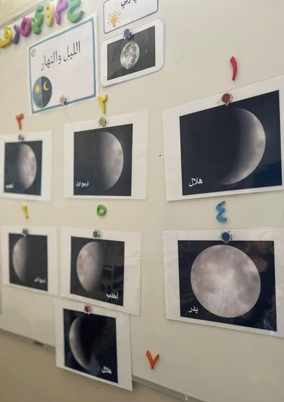
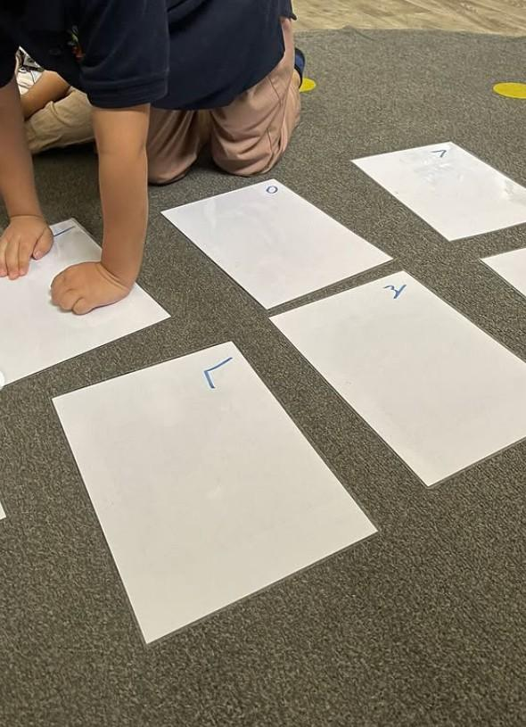
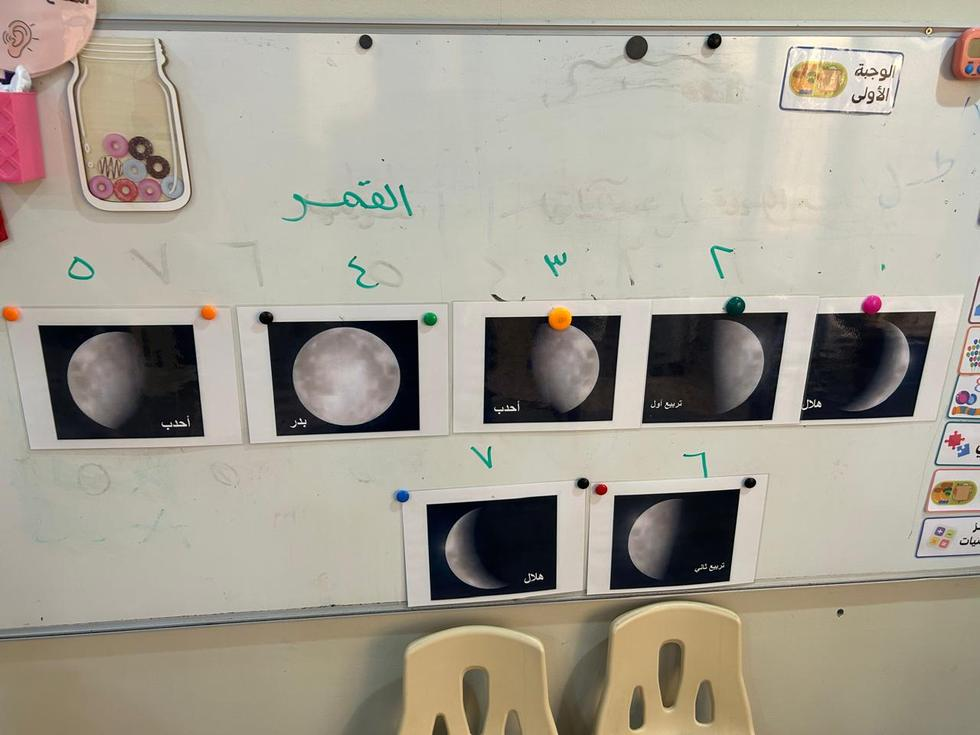

المرحلة: تمهيدي (5–6 سنوات) · الفصل الدراسي الثاني · الركن الداعم: ركن أكتشف ما حولي
المدة: نصف ساعة
مسار بداية اللقاء
إشارة بدء اللقاء
السلام عليكم ورحمة الله وبركاته يا طلاب العلم المباركين، هيا نستمع لنعرف ماذا سيكون لقاؤنا.
الإشارة الثابتة: تُشغّل المعلمة أنشودة العلم هو النور الهادي بوصفها علامة بدء لقاء علّمني ربي؛ فإذا سمعها الأطفال عرفوا أن اللقاء سيبدأ الآن، فيتهيؤون للجلوس والإنصات والتفكّر.
فيديو إشارة بدء لقاء علّمني ربي — تستعين به المعلمة لضبط نغمة الإشارة (نفس إشارة المادة في جميع الوحدات).
الحزمُ مع الهدوء: تُدير المعلمةُ اللقاءَ بحزمٍ هادئ — صوتٌ لطيفٌ، وحدودٌ واضحة، وابتسامةٌ محتسبة — دون شدّةٍ تُنفّر ولا فوضى تُشتّت.
قوانين الفصل
أحافظ على نظافة فصليإماطة الأذى عن الطريق صدقة.
أستمع وأنصتفلا أقاطع الآخرين.
أحفظ لساني ويديالمسلم من سلم المسلمون من لسانه ويده.
أجلس جلسة صحيحةفي المساحة المخصصة لي.
أرفع يدي للمشاركةالسؤال للجميع والإجابة لمن تختاره المعلمة.
مراجعة سريعة
ماذا تعلمنا في اللقاء السابق؟ ما الآية أو المخلوق الذي تفكرنا فيه؟ كيف نشكر الله على ما تعلمنا؟ ثم تُهيّئ المعلمة للانتقال من الشمس وأعمال النهار إلى آية جديدة نراها غالبًا في الليل: القمر.
ورقة التدريس السريعة — خطوات اللقاء أثناء الدرس
① تهيئة وبداية اللقاء ٨ د
إشارة بدء اللقاء: أنشودة «العلم هو النور الهادي».
تذكير الأطفال بقوانين الفصل الخمسة.
مراجعة سريعة، ثم اكتشاف المخلوق الذي نراه غالبًا في الليل: القمر.
② بناء وسير اللقاء ١٤ د
الآية المحورية ﴿وَالْقَمَرَ قَدَّرْنَاهُ مَنَازِلَ﴾ والتقاط كلمة «منازل».
لماذا جعل الله للقمر منازل؟ (معرفة الشهور والأوقات).
ترتيب منازل القمر السبع على اللوح المغناطيسي.
القمر يسبح الله ويسجد له ولا نعلم كيف + العبارة المركزية.
③ إغلاق وتقويم ٨ د
التقويم النهائي بعود الخشب / كرسي الأسئلة.
ترديد: «القمر آية من آيات الله، وله منازل ينتفع الناس بها».
دعاء كفارة المجلس وختام اللقاء.
ربط الأسرة: عند رؤية القمر ليلًا يقول الطفل مع أسرته: «سبحان الله الذي خلق القمر»، ويتأمّل الفرق بين الهلال والبدر.
ورقةٌ مرجعية سريعة أثناء الدرس — الخطوات فقط دون الأهداف والزيادات؛ والنصّ الكامل في تبويب «دليل الدرس كامل».
سير اللقاء
تمهيد — الاكتشاف: «اليوم سنتفكر في مخلوق نراه في السماء في الليل. ما اسمه؟» تستمع المعلمة لإجابات الأطفال ثم تكشف بطاقة القمر: «ما هذا؟» — القمر. «متى يظهر غالبًا؟» — في الليل. «بعد أن تغرب الشمس يظهر القمر في السماء، وجعله الله آية من آياته وسخّره لنا لننتفع به».
القمر في القرآن الكريم: ذُكر لفظ «القمر» في القرآن الكريم 27 مرة. «على الرغم من ظلمة الليل جعل الله القمر منيرًا في السماء بأمره، وسخّره لنا لننتفع به».
الآية الرئيسية — منازل القمر: ﴿وَالْقَمَرَ قَدَّرْنَاهُ مَنَازِلَ حَتَّىٰ عَادَ كَالْعُرْجُونِ الْقَدِيمِ﴾ [يس: 39]. «من يسمع كلمة منازل يرفع يده. منازل القمر هي المراحل التي يتغير فيها شكله بتقدير الله».
لماذا جعل الله للقمر منازل؟ من عزة الله وحكمته أنه قدّر للقمر منازل نعرف بها الزمن: أول الشهر أم منتصفه أم آخره، وما الشهر الذي انتهى وما الذي يليه. وبالهلال نعرف دخول رمضان والحج وباقي الشهور. وكل يوم له منزلة، ثم يعود في آخر الشهر «كالعرجون القديم» — وهو غصن النخل إذا صار قديمًا وضعف والتوى.
النشاط الرئيسي — ترتيب منازل القمر: على السبورة أرقام، وعلى الطاولة بطاقات المنازل السبع. تختار كل طفلة بطاقة وتضعها في مكانها المناسب من الهلال إلى البدر ثم عودة التناقص إلى الهلال.

بطاقات منازل القمر التي ترتّبها الطفلة
المنازل السبع: ① الهلال (أول الشهر) ← ② التربيع الأول ← ③ الأحدب الأول ← ④ البدر (منتصف الشهر) ← ⑤ الأحدب الثاني ← ⑥ التربيع الثاني ← ⑦ الهلال (آخر الشهر). لا يلزم أن يحفظ الطفل أسماء المنازل كلها؛ يكفي أن يلاحظ التغير والنظام ويقول: «الله قدّر القمر منازل».
المعنى المركزي: القمر آية من آيات الله، وله منازل ينتفع الناس بها. هو قمر واحد لكن شكله يتغير بأمر الله: يبدأ هلالًا فيكبر حتى يصير بدرًا، ثم ينقص حتى يعود هلالًا كما بدأ — فيعرف الناس الأوقات والتواريخ والشهور.
القمر يسبح لله ويسجد له: ﴿أَلَمْ تَرَ أَنَّ اللَّهَ يَسْجُدُ لَهُ مَن فِي السَّمَاوَاتِ وَمَن فِي الْأَرْضِ وَالشَّمْسُ وَالْقَمَرُ …﴾ [الحج: 18]. القمر مطيع لأمر الله ويسجد له، لكن لا نعلم كيف يسجد ولا كيف يسبح — لا يعلم ذلك إلا الله الذي خلقه، ونحن نطيع الله كما انقادت مخلوقاته لأمره.
تصحيح فهم الطفل: القمر مخلوق من مخلوقات الله، لا يغيّر شكله بنفسه بل بأمر الله وتقديره: ﴿وَالْقَمَرَ قَدَّرْنَاهُ مَنَازِلَ﴾؛ فالله هو المقدِّر والقمر مقدَّر له. ولا نعلّق قلوبنا بالقمر لذاته، بل نجعله طريقًا للتفكر في الخالق. وعند ذكر سجوده وتسبيحه نثبت ما أخبر الله به بلا تمثيل: يسجد لله سجودًا يليق به، والله وحده يعلم كيفيته.
الجملة الختامية: «القمر آية من آيات الله، وله منازل ينتفع الناس بها» — يردّدها الأطفال جماعةً.
تثبيت المعنى — قمرٌ واحد بأشكال (سرد مبسّط · ضمن سير الدرس)
«سبحان الله العظيم الذي جعل القمر يتغير. هو قمر واحد، لكن شكله يتغير: يبدأ هلالًا فيكبر، ثم يصير بدرًا، ثم ينقص حتى يعود هلالًا كما بدأ».
ثم تقول المعلمة: «عندما نراه هلالًا مرة أخرى نعرف أن شهرًا انتهى وسيبدأ شهر جديد — ينتفع الناس به فيعرفون الأوقات والتواريخ والشهور».
الوسائل والصور المعروضة في اللقاء

نشاط أرضي بالأرقامترتيب الأرقام تمهيدًا لمطابقة المنازل
بطاقات منازل القمرالصور والأسماء على اللوحة

ترتيب المنازل رقميًاربط البطاقات بالأرقام في تسلسل بصري
الإغلاق — التغذية الراجعة
أسئلة التغذية الراجعة (مع الإجابات النموذجية)
من خلق القمر؟ ومن الذي جعل له منازل يتغير فيها شكله؟الله وحده هو الذي خلق القمر وقدّر له منازله؛ فالقمر لا يتغير من نفسه بل بأمر الله وتقديره.
ما الفرق بين الهلال والبدر؟ وماذا نعرف عندما نرى الهلال؟الهلال رقيق منحنٍ في أول الشهر وآخره، والبدر مكتمل مضيء في منتصف الشهر؛ وإذا رأينا الهلال عرفنا أن شهرًا جديدًا قد بدأ.
هل القمر يسبح الله؟ وهل نعلم كيف يسبح؟نعم، القمر يسبح الله ويسجد له كما أخبر الله، لكن لا نعلم كيف يسبح ويسجد؛ الله وحده يعلم كيفية ذلك، ونؤمن به دون أن نتخيله.
تختار المعلمة سؤالين أو ثلاثة بحسب وقت الأطفال، وتُرشد الطفل برفق. المعيار: 3 أسئلة صحيحة + مشاركة هادئة.
النشاط المصاحب
ترتيب منازل القمر على اللوح المغناطيسي
الهدفأن يلاحظ الطفل تغيّر شكل القمر ونظامه، ويرتّب المنازل مطابقًا الصورة بالرقم أو الاسم، فيقول: «الله قدّر القمر منازل».
الأدواتبطاقات منازل القمر · أرقام كبيرة · سبورة أو أرضية واسعة · مغناطيس أو لاصق.
صور النشاط وأدواته
نشاط أرضي بالأرقامالاستعداد لمطابقة المنازل
بطاقات المنازلالصور والأسماء
الترتيب الرقميتسلسل بصري بالأرقام
خطوات التنفيذ
تعرض المعلمة بطاقات منازل القمر دون ترتيب وتسأل: هل شكل القمر دائمًا واحد؟
يرتب الأطفال البطاقات بحسب ما يرونه من هلال إلى بدر ثم عودة التناقص.
تربط المعلمة ذلك بقول الله تعالى: ﴿وَالْقَمَرَ قَدَّرْنَاهُ مَنَازِلَ﴾.
تستخدم الأرقام لدعم مهارة الترتيب والتسلسل.
أسئلة أثناء النشاط
هل هذا القمر هلال أم بدر؟
ماذا نعرف عندما نرى الهلال؟
من الذي قدّر للقمر هذه المنازل؟
اختيارات حسب حاجة الطفل
من يحتاج دعمًا: صورتان فقط: هلال وبدر — أيهما صغير؟ أيهما مكتمل؟
السريع: ترتيب ثلاث منازل متتابعة أو ذكر فائدة رؤية الهلال.
الخجول: بطاقة سهلة (الهلال أو البدر) + تعزيز فوري.
خاتمة النشاطنردّد معًا: «القمر آية من آيات الله، وله منازل ينتفع الناس بها»، ونقول عند رؤيته: سبحان الله.
اختيارات الأنشطة الإضافية
تلبية الاحتياجات الفرديةمن يحتاج دعمًا: صورتان (هلال/بدر). السريع: ترتيب ثلاث منازل. الخجول: بطاقة سهلة + تعزيز فوري.
الربط بالمواد الأخرىكتابي المنير: قراءة ﴿وَالْقَمَرَ قَدَّرْنَاهُ مَنَازِلَ﴾. مهاراتي: عدّ منازل القمر من 1 إلى 7. أحبك ربي: أسماء الله: العزيز، القادر، المقدّر.
التوسيع والإثراءتنويع: مجموعة الهلال ومجموعة البدر، كل مجموعة تختار بطاقة. فني: يرسم الطفل الهلال أو البدر ويكتب: القمر آية من آيات الله.
اقتراحات للتكرار حبل زمني أو خط على الأرض لترتيب البطاقات، وإعادة الترتيب في مطلع اللقاء التالي كمراجعة سريعة.
كفارة المجلس · خاتمة اللقاء
سبحانك اللهم وبحمدك، أشهد أن لا إله إلا أنت، أستغفرك وأتوب إليك.
العلاقة التكاملية لهذا اللقاء
الفكرة الناظمة لليوم: القمر ومنازله آية في التقدير والطمأنينة.
سؤال اليوم: لماذا يتغير شكل القمر؟ وماذا يعلمني ذلك عن تقدير الله؟
هذا اللقاء: علّمني ربي — القمر.
كيف يتكامل هذا اللقاء مع بقية دروس اليوم والوحدة؟
التعليمُ التكامليّ = يعيشُ الطفلُ المعنى الواحد في كلّ حصص يومه؛ فمعنى «القمرُ ومنازلُه آيةٌ في التقدير» يمتدُّ خيطًا في القرآن واللغة والعدد والأدب. وهذه جسورُ الربط العمليّة:
كتابي المنير — سورة الفجر
﴿وَلَيَالٍ عَشْرٍ﴾ — الليالي تُعرَف بالقمر ومنازله التي درسها الطفل؛ فيربط تغيّرَ القمر بعظمة ما أقسم الله به. حركةُ المعلمة: «كيف نعرف الليالي العشر؟ بالقمر الذي تعلّمنا منازله».
أحبك ربي — أسماء الله الحسنى
تغيّرُ القمر بحسابٍ دقيق دليلٌ على الله المقدِّرِ الحكيم. حركةُ المعلمة: «مَن قدّر للقمر منازلَه بهذا الإحكام؟ ربُّنا الحكيم».
يتعلّم الطفلُ سُنّةَ الدعاء عند رؤية الهلال: «اللهم أهلّه علينا بالأمن والإيمان». حركةُ المعلمة: «إذا رأينا الهلالَ الجديد ماذا نقول؟».
الأركان والأناشيد
في الأركان يرتّب الطفلُ نموذجَ منازل القمر (هلال · بدر · محاق)، ويردّد نشيدَ التفكّر. حركةُ المعلمة: ربطُ ترتيب المنازل بتقدير الله.
فكرة للربط السريع
اسألي: كيف يخدم هذا اللقاء معنى اليوم؟ وما السلوك أو العبارة التي سيخرج بها الطفل إلى اللقاء التالي؟
التقويم في منهج غرس القيم ثلاثي المراحل — يربط القبلي الدرس الرابع بما تعلمه الأطفال في الدروس الثلاثة السابقة.
التقويم القبلي
ما اسم وحدتنا؟
ما العبادة القلبية التي يحبها الله؟
من هم أولو الألباب؟
ما المخلوق الذي نراه غالبًا في الليل؟
هل رأيتم القمر من قبل؟ كيف كان شكله؟
التقويم التكويني
انتباه الأطفال عند كشف بطاقة القمر
قدرة الطفل على التقاط كلمة «منازل» من الآية
هل القمر هنا هلال أم بدر؟ هل شكله ثابت أم يتغير؟
الآداب: الجلوس، الانتظار، عدم خطف البطاقة
التقويم النهائي
يذكر معلومة واحدة صحيحة عن القمر أو منازله
يميّز بين الهلال والبدر
يردد: القمر آية من آيات الله، وله منازل
المعيار: 3 أسئلة صحيحة + مشاركة هادئة
مؤشرات النجاح
المؤشر الوجداني
قول «سبحان الله» تلقائيًا عند مشاهدة بطاقة البدر أو الحديث عن منازل القمر.
المؤشر المعرفي
التمييز بين الهلال والبدر، وذكر أن الهلال يدل على بداية شهر جديد.
المؤشر السلوكي
وضع بطاقة واحدة في موضعها الصحيح، والانتظار الهادئ دون خطف البطاقات.
المؤشر اللغوي
استخدام كلمات الدرس: منازل، هلال، بدر، تقدير، آية، سخّر.
الآداب الصفية لحظات تربوية ذهبية — مواقف هذا الدرس مرتبطة مباشرة بالقمر ومنازله. الحزم مع الهدوء دائمًا.
آداب المعلمة — مقدمة الرعاية
تبدأ بالبسملة والحمدلة والدعاء: «اللهم علّمنا ما ينفعنا وانفعنا بما علّمتنا».
تنطلق كل فكرة من آية أو نص حديث صحيح أو معنى شرعي منضبط.
تعظّم النص عند تلاوة الآيات، وتقرأها بخشوع وهدوء.
لا تمثّل سجود القمر ولا كيفية تسبيحه — لأن ذلك من الغيب الذي يعلمه الله وحده.
١ · طفل يريد بطاقة القمر قبل دوره
الموقفطفل يمد يده ليأخذ البطاقة قبل أن يحين دوره.
رد المعلمة«لكل واحد دوره، كما جعل الله للقمر منازل مرتبة — انتظر دورك بارك الله فيك».
القيمةالصبر وانتظار الدور — النظام والترتيب.
ربط بالدرس: القمر لا يتقدم عن منزلته ولا يتأخر — كذلك نحن نلتزم بترتيبنا.
٢ · طفل وضع منزلة القمر في غير مكانها
الموقفطفل وضع بطاقة البدر في مكان الهلال.
رد المعلمة«أحسنت المحاولة، لنفكر معًا: هل هذا القمر صغير مثل الهلال أم مكتمل مثل البدر؟».
القيمةالتفكير، الهدوء، التصحيح اللطيف الذي يحفظ كرامة الطفل.
ربط بالدرس: التفكير في الفرق بين الهلال والبدر هو نفسه عبادة التفكر التي تعلمناها.
٣ · طفل قال: القمر يغير شكله بنفسه
الموقفطفل قال: «القمر يغير شكله بنفسه!».
رد المعلمة«القمر مخلوق من مخلوقات الله، والله هو الذي قدّر له هذه المنازل. فهو لا يفعل شيئًا بنفسه، بل بأمر الله».
القيمةترسيخ التوحيد — كل شيء بأمر الله وحده، لا بإرادة المخلوق.
ربط بالآية: ﴿وَالْقَمَرَ قَدَّرْنَاهُ مَنَازِلَ﴾ — الله هو المقدِّر، والقمر مقدَّر له.
٤ · طفل يسأل: كيف يسجد القمر؟
الموقفطفل يسأل بفضول: «كيف يسجد القمر؟ هل ينزل للأرض؟».
رد المعلمة«ما شاء الله، سؤال جميل! نؤمن بما أخبرنا الله — أن القمر يسجد لله — لكن لا نعرف كيف يسجد؛ الله وحده يعلم. ونحن نؤمن بذلك دون أن نتكلم فيما لا نعلمه».
القيمةالتسليم للنص الشرعي — الإيمان بالغيب — أدب السؤال والتوقف عند حدود العلم.
ربط بالمنهج: هذا الأدب هو أساس التعامل مع الغيب — نؤمن ولا نتخيل الكيفية.
هدف التهيئة المنزلية: أن يرى الطفل القمر في واقعه اليومي، ويربط رؤيته بتعظيم الله وشكره ومعرفة أن الله جعل له منازل نافعة.
١ · تهيئة وجدانية
أعند رؤية القمر ليلًا يقول ولي الأمر لطفله: «سبحان الله الذي خلق القمر».
بيردد معه: «الحمد لله الذي سخّر لنا القمر».
جيسأله: «من خلق القمر؟».
← يربط الطفل بين الدرس ومشاعره تجاه ما يراه في السماء.
٢ · تهيئة معرفية
أيقرأ مع الطفل ﴿وَالْقَمَرَ قَدَّرْنَاهُ مَنَازِلَ﴾ ويشرح: «أي جعل الله للقمر مراحل يتغير فيها شكله».
بيناقشه: «هل رأيت القمر هلالًا؟ هل رأيته بدرًا كاملًا؟».
← يرسّخ المفهوم قبل سماعه في الصف.
٣ · تهيئة حسية
أعند رؤية القمر من النافذة أو في مكان آمن: «هذا القمر آية من آيات الله».
بيشير إلى اختلاف شكله في بعض الليالي: «القمر واحد، لكن الله يجعله يظهر لنا بأشكال مختلفة».
← يعيش الطفل المعنى واقعيًا قبل عرضه في الصف.
٤ · تهيئة عملية بسيطة
أيساعد الطفل في رسم أو إحضار بطاقة لصورة قمر: هلال أو بدر.
بيكتب معه عبارة قصيرة: القمر آية من آيات الله.
← مشاركة الأسرة تعطي الطفل حافزًا للعرض أمام زملائه.
٥ · تهيئة سلوكية
أيدرب طفله على قول «سبحان الله» عند رؤية القمر.
بيشجعه على الهدوء عند التأمل في السماء، ويذكّره أن كل المخلوقات تسبح الله وتطيعه.
← يصبح السلوك اليومي نفسه جزءًا من الدرس.
أسئلة تطرحها على طفلك
ماذا تعلّمتَ اليوم في الروضة؟ عن أي مخلوق تحدّثنا؟
من خلق القمر؟ من الذي جعل له منازل يتغير فيها شكله؟
ما الفرق بين الهلال والبدر؟
ماذا نعرف عندما نرى الهلال؟
هل القمر يسبح الله؟ وهل نعلم كيف يسبح؟
نص رسالة جاهزة لولي الأمر (واتساب)
بسم الله الرحمن الرحيم السلام عليكم ورحمة الله وبركاته
سيتعلم طفلكم في لقاء علّمني ربي أن القمر آية من آيات الله، وأن الله جعل له منازل يتغير فيها شكله من هلال إلى بدر ثم يعود هلالًا، وينتفع الناس به في معرفة بداية الشهور مثل رمضان وذي الحجة.
نشاط بيتي: هيّئوا الطفل بمشاهدة القمر إن تيسّر، واسألوه: «من خلق القمر؟» وذكّروه بقول سبحان الله والحمد لله الذي سخّر لنا القمر.
جزاكم الله خيرًا على شراككم في تربية أبنائكم — فريق نادي غرس القيم
القيم الأساسية للدرس
العلم
نطلب العلم لنتعرف على آيات الله ونزداد إيمانًا.
التفكّر
نتفكر في القمر ومنازله لنرى عظمة الله وقدرته.
التعظيم
نعظّم الله عند رؤية القمر لأنه من خلقه سبحانه.
الشكر
نشكر الله على نعمة القمر وانتفاع الناس به في معرفة الشهور.
التسليم
نؤمن أن القمر يسبح الله ويسجد له، ولا نعلم كيفية ذلك.
النظام
منازل القمر تسير بتقدير من الله — الطفل يتعلم معنى الترتيب والنظام.
تنبيه شرعي للمعلمة: القمر مخلوق من مخلوقات الله، لا نعلّق قلب الطفل به لذاته، بل نجعله طريقًا للتفكر في الخالق. وعند ذكر سجوده وتسبيحه نُثبت ما أخبر الله به دون تكييف أو تمثيل: لا نقول «القمر يسجد مثل سجودنا»، بل «يسجد لله سجودًا يليق به، والله وحده يعلم كيفيته».
المفاهيم الأساسية
القمر آية من آيات الله
مخلوق عظيم يظهر غالبًا في الليل — عند رؤيته نقول: سبحان الله، لأن الله خلقه.
الله جعل للقمر منازل
﴿وَالْقَمَرَ قَدَّرْنَاهُ مَنَازِلَ﴾ — القمر يتغير شكله بأمر الله، وليس من نفسه.
معنى العرجون القديم
عود النخل القديم المنحني — شبّه الله به القمر في آخر الشهر حين يعود هلالًا رقيقًا.
القمر ينفع الناس في معرفة الشهور
الهلال يدل على بداية شهر جديد — نعرف به رمضان وذي الحجة وسائر الشهور.
القمر مسخر بأمر الله
﴿وَسَخَّرَ لَكُمُ اللَّيْلَ وَالنَّهَارَ وَالشَّمْسَ وَالْقَمَرَ﴾ — لا يتحرك ولا يتغير إلا بأمر الله.
القمر يسبح الله ويسجد له
نؤمن به ولا نعلم كيفيته — من الغيب الذي يعلمه الله وحده.
التفكر في القمر يزيد الإيمان
حين يتأمل الطفل القمر ومنازله ينتقل من المشاهدة إلى الإيمان، ومن التعجب إلى التسبيح.
هلال ← تربيع أول ← أحدب ← بدر ← أحدب ← تربيع ثانٍ ← هلال.
التقويم
عود الخشب / كرسي الأسئلة: اذكر معلومة عن القمر أو منزلة من منازله.
تنبيه شرعي
لا تمثّل سجود القمر أو تسبيحه — ذلك من الغيب الذي لا نعلم كيفيته.
وقت الأركان التطبيقية
الأركان مساحاتٌ غنيّة بأدوات التعلّم، مدّتها ٣٠ دقيقة، يلعب فيها الأطفال ويستكشفون الأدوات بحرّية ومرح — لا التزام بآداب مجالس العلم كالمواد الأساسية. وتستقطع المعلمة وقتًا يسيرًا لتنفيذ نشاط تطبيقي سريع على الفكرة المركزية للدرس تأكيدًا وترسيخًا للمعلومة. أمام المعلمة ركنان مقترحان تختار بينهما (أو تنفّذهما معًا) بحسب جاهزية البيئة.
ضابط منهجي: الصور والوسائل لتقريب الفكرة، والنص الشرعي يبقى في موضع التلاوة والتعظيم؛ والقمر آية مخلوقة لا تُعبد، فلا نربطه بتنجيم أو خرافة، ولا نمثّل سجوده أو تسبيحه لأنه من الغيب الذي يعلمه الله وحده.